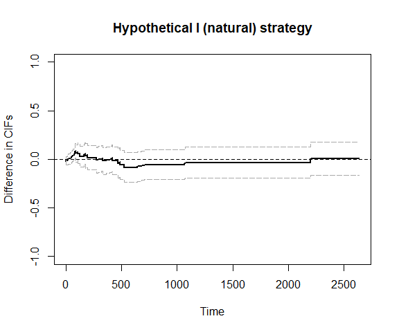
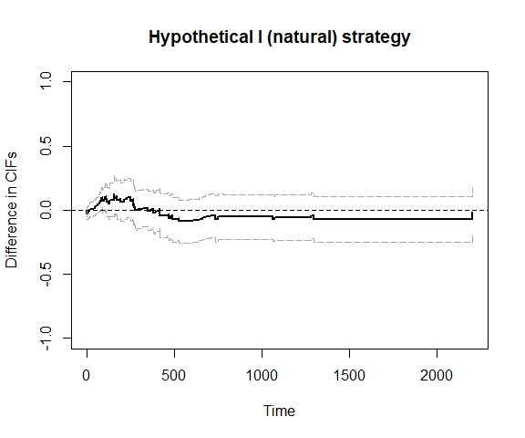

tteICE: An R Package for Estimating Treatment Effects on Time-to-Event Outcomes with Intercurrent Events
- Randomized trials and observational studies
- Five strategies to deal with intercurrent events
- Two types of data structures
- About this package
The goal of the package “tteICE” is to estimate the treatment effect for time-to-event outcomes with intercurrent events.
Randomized trials and observational studies
Randomized trials are the best form of experiments for evaluating the treatment effect because confounders are naturally balanced between treatment groups. The difference in outcomes between treatment groups is explained by the treatment condition. In observational studies, confounders (observed or unobserved) are not balanced. To estimate the treatment effect, we need to assume all confounders are collected. Then we may use matching, weighting, or emulating trial methods to create a sample analogue to randomized trials. Although methods for randomized trials apply to observational studies after adjusting for confounders, one should be careful in making causal conclusions based on observational studies due to the threat of unmeasured confounding.
Five strategies to deal with intercurrent events
The ICH E9 (R1) proposed five strategies to deal with intercurrent events: treatment policy strategy, composite variable strategy, hypothetical strategy, while on treatment strategy, and principal stratum strategy. To answer a specific scientific question, a corresponding strategy should be chosen before the experimental design and data analysis. The estimand to describe the distribution of the time to the primary outcome event is the potential cumulative incidence function (CIF). The treatment effect is defined as the contrast of the potential cumulative incidence functions under treated and control.
- Treatment policy strategy. The treatment policy strategy addresses the problem of intercurrent events by expanding the initial treatment conditions to a treatment policy. This strategy is applicable only if intercurrent events do not hinder primary outcome events. It is confined to a semicompeting risks context.
- Composite variable strategy. The composite variable strategy addresses the problem of intercurrent events by expanding the outcome variables. It aggregates the intercurrent event and primary outcome event into a single composite outcome variable.
- Hypothetical strategy. The hypothetical strategy envisions a hypothetical clinical trial condition where the occurrence of intercurrent events is restricted in certain ways. By doing so, the distribution of potential outcomes under the hypothetical scenario can capture the impact of intercurrent events explicitly through a pre-specified criterion. The hypothetical strategy is closely related to mediation analysis, which is intended to evaluate the direct and indirect effects using semicompeting risks data.
- While on treatment strategy. The while on treatment strategy considers the measure of outcome variables taken only up to the occurrence of intercurrent events. The failures of primary outcome events should not be counted in the cumulative incidences if intercurrent events occurred. The while on treatment strategy is closely related to the competing risks model.
- Principal stratum strategy. The principal stratum strategy aims to stratify the population into subpopulations based on the joint potential occurrences of intercurrent events under the two treatment assignments. Usually, we are interested in a principal stratum comprised of individuals who would never experience intercurrent events, regardless of which treatment they receive. A principal ignorability assumption is made.
Two types of data structures
In particular, we consider two types of data structures.
- Competing risks. Only the time to the first occurrence of either the primary outcome event or the intercurrent event is recorded. An indicator describes the type of this event, i.e., whether it is the primary outcome event, intercurrent event, or censoring. The treatment policy strategy cannot be applied to competing risks data.
- Semicompeting risks. Both the time to the primary outcome event and the time to the intercurrent event are recorded. The censoring indicators for these events are also recorded. All five strategies can be applied to semicompeting risks data.
The composite variable strategy, while on treatment strategy, principal stratum strategy, and hypothetical strategy (II, removed) yield the same results for the competing risks and semicompeting risks data, since only the first occurrence of events is used. The hypothetical strategy (I, natural) yields different results for the competing risks and semicompeting risks data, since both cause-specific hazards of the primary event contribute to the counterfactual cumulative incidence function for semicompeting risk data.
References:
[1] International Conference on Harmonization (2019). ICH E9 (R1): Addendum to Statistical Principles for Clinical Trials on Choosing Appropriate Estimands and Defining Sensitivity Analyses in Clinical Trials. (Step 4 version dated 20 November 2019). https://database.ich.org/sites/default/files/E9-R1_Step4_Guideline_2019_1203.pdf.
[2] Deng, Y., Han, S., & Zhou, X. H. (2025). Inference for Cumulative Incidences and Treatment Effects in Randomized Controlled Trials With Time‐to‐Event Outcomes Under ICH E9 (R1). Statistics in Medicine. https://doi.org/10.1002/sim.70091.
About this package
Installation
You can install the development version of “tteICE” from GitHub with:
# install.packages("pak")
pak::pak("mephas/tteICE")Alternatively, you can install “tteICE” from R CRAN with:
install.packages("tteICE")Example
We use the bmt data to illustrate how to estimate the treatment effect. The primary event is death, and the intercurrent event is relapse.
Competing risks data structure
The time to the first event (either death or relapse) is t2. The event indicator is d4=d2+d3, so that d4=1 if death occurs first, while d4=2 if relapse occurs first.
library(tteICE)
data(bmt)
A = as.numeric(bmt$group>1)
X = as.matrix(bmt[,c('z1','z3','z5')])
bmt = transform(bmt, d4=d2+d3)Suppose we would like to use the hypothetical strategy (natural effects). We fit the model by nonparametric estimation.
fit1 = surv.tteICE(A, bmt$t2, bmt$d4, "natural")
plot_inc(fit1, plot.configs=list(legend=c('AML','ALL')))
plot_ate(fit1)
## We can also use bootstrap confidence intervals
plot_ate(fit1, nboot=200)
We can also use inverse probability weighting to account for confounding.
fit2 = surv.tteICE(A, bmt$t2, bmt$d4, "natural", X, method='ipw')
plot_inc(fit2, plot.configs=list(legend=c('AML','ALL')))
plot_ate(fit2)
To increase efficiency, we use the efficient influence function (EIF)-based method.
fit3 = surv.tteICE(A, bmt$t2, bmt$d4, "natural", X, method='eff')
plot_inc(fit3, plot.configs=list(legend=c('AML','ALL')))
plot_ate(fit3)
Semicompeting risks data structure
Note that the time to death (or censoring) is t1 and the time to relapse (or censoring) is t2. We use the hypothetical strategy (natural effects) and fit the model nonparametrically.
fit4 = scr.tteICE(A, bmt$t1, bmt$d1, bmt$t2, bmt$d2, "natural")
plot_inc(fit4, plot.configs=list(legend=c('AML','ALL')))
plot_ate(fit4)
## We can also use bootstrap confidence intervals
plot_ate(fit4, nboot=200)
We can also use inverse probability weighting to account for confounding.
fit5 = scr.tteICE(A, bmt$t1, bmt$d1, bmt$t2, bmt$d2, "natural", X, method='ipw')
plot_inc(fit5, legend=c('AML','ALL'))
plot_ate(fit5)
To increase efficiency, we use the efficient influence function (EIF)-based method.
fit6 = scr.tteICE(A, bmt$t1, bmt$d1, bmt$t2, bmt$d2, "natural", X, method='eff')
plot_inc(fit6, plot.configs=list(legend=c('AML','ALL')))
plot_ate(fit6)
Remarks on methodology
To identify the potential CIF and treatment effect, we make the following assumptions. When the semiparametrically efficient estimation method is used, these assumptions are made conditional on covariates.
- Stable unit treatment value assumption (SUTVA). All individuals are independent, and there is only one version of potential outcomes associated with each treatment condition.
- Consistency. The potential time to events and event indicators associated with the realized treatment condition are observable.
- Randomization. The treatment is independent of potential outcomes, i.e., the treatment assignment is randomized.
- Random censoring. The potential censoring time is independent of potential event times.
- Positivity. There is a positive probability for each individual to be treated or controlled. There is a positive probability that the censoring time is larger than the end of study.
- Principal ignorability. The potential time to the primary outcome event does not rely on the cross-world potential time to the intercurrent event. This assumption is only required for the principal stratum strategy.
The five strategies differ in the scientific questions to answer and, therefore, incorporate intercurrent events differently. The treatment policy strategy considers the effect on primary outcome events with intercurrent events as natural. Because the intercurrent event is considered part of the treatment condition, any difference in the hazards of intercurrent events between the treatment groups reflects the effect of the treatment policy. The composite variable strategy considers a composite of the primary outcome event and the intercurrent event. The while on treatment strategy estimand quantifies the total effect on the cumulative incidence of the primary outcome event, which is contributed by two sources: one is the effect of changing the hazard of primary outcome events, and the other is the effect of changing the hazard of intercurrent events. The first source is also quantified by the hypothetical strategy estimand Scenario I. The principal stratum strategy considers a subpopulation defined by potential intercurrent events, typically where such events would not occur under either treatment condition.
In general, the hypothetical strategy and principal stratum strategy target some direct effects, while other strategies target some total effects. Identifying direct effects requires stronger assumptions, such as sequential ignorability or principal ignorability. Under the multi-state model, let the original status, intercurrent event status, and primary outcome event status be three compartments. Then the potential CIF under the composite variable strategy is the probability of being in either state of intercurrent events or primary outcome events, whereas the potential CIF under the while on treatment strategy is the probability of being in the state of primary outcome events developed directly following the initial status. If the data are of the semi-competing risks structure, the potential CIF under the treatment policy strategy represents the probability of being in the state of primary outcome events, regardless of whether intercurrent events occur before the primary outcome events.